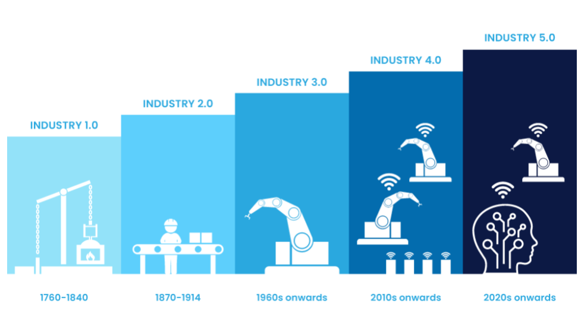

Industry 1.0 - Mechanization (Late 18th Century)
The first industrial revolution began in England in the 1760s with the introduction of water and steam used to help transport goods from place to place. Steam was already known, however, it wasn’t until this time that it was used in the industrial processes, making it the biggest breakthrough of its kind during the era. Industries such as glass, mining, agriculture, and textiles greatly benefitted from this as they were now able to produce larger quantities of items due to the introduction of mechanization.
.png)
Key Features:
- Use of water and steam power
- Mechanical production equipment
- Transition from handcrafting to machine-based work
Impact on Automation:
- Reduced human physical effort
- Birth of factories
- Machines still fully human-operated
Examples:
- Steam engines, mechanical looms
Industry 2.0 - Electrification & Mass Production (Early 20th Century)
The rise of the second industrial revolution began mostly in Britain, America, and Germany in the 1870s and was known as the “Technological Revolution.” During this time, electrical technology was introduced and powered machines unlike nothing else. This made machines much more user-friendly and was much more cost-efficient. It was also when mass production became a reality due to the creation of the assembly line. This allowed the invention and success of automobiles and planes.
Key Features:
- Introduction of electric power
- Assembly lines and division of labor
- Mass production techniques
Impact on Automation:
- Faster production rates
- Standardized products
- Partial automation
Examples:
- Conveyor belts, electric motors, Ford assembly line
.png)
Industry 3.0 - Automation & Digitalization (1970s-2000s)
The third industrial revolution in the 1970s sparked the beginning of IT and computer technology, known as the “Digital Revolution.” While the computers were much larger than what we currently use, they laid the foundational groundwork for current computers. While these computers were mostly automated, they did still need a human controller. Manufacturing and automation also advanced because of internet access, connectivity, and renewable energy. Industry 3.0 is still widely used in the workforce and has been a tremendous help in guiding Industry 4.0.
.png)
Key Features:
- Use of electronics and IT
- Programmable Logic Controllers (PLC)
- Computer-based control systems
Impact on Automation:
- Fully automated machines
- High precision and repeatability
- Reduced human intervention
Examples:
- PLC, CNC machines, SCADA, industrial robots
Industry 4.0 - Smart & Connected Automation (2010s-Present)
It’s been debated on when Industry 4.0 began, but the term was coined in 2011 with the industry seeing great growth in smart machines, storage systems, and production facilities not needing any human interaction. The start of Internet of Things (IoT) was created which is an interconnected network of machine devices and vehicles embedded with computerized sensing, scanning, and monitoring capabilities. Sustainability has also been a big factor in Industry 4.0 as the world continue to improve the environment. The hope is that by developing more green technology using Industry 4.0, the three pillars of sustainability (environmental, economic, and social) will be see a big improvement.
.png)
Key Features:
- Industrial IoT (IIoT)
- Cyber-physical systems
- Cloud computing and big data
Impact on Automation:
- Smart factories
- Real-time monitoring and decision-making
- Predictive maintenance and self-optimization
Examples:
- Smart sensors, digital twins, AI-based analytics
Industry 5.0 - Human-Centric & Intelligent Automation (Emerging)
It may seem almost like science-fiction, but the future of Industry 5.0 could be on the rise. This will be a time when humans and A.I. work side-by-side to improve the efficiency of production. The goal for Industry 5.0 is to produce better automation of the manufacturing process by having humans and robots work together and provide customers better customizations.
.png)
Key Features:
- Human–machine collaboration
- Artificial Intelligence and cognitive systems
- Focus on sustainability and personalization
Impact on Automation:
- Collaborative robots (cobots)
- Mass customization
- Ethical, resilient, and sustainable production
Examples:
- Cobots, AI-driven decision support, personalized manufacturing